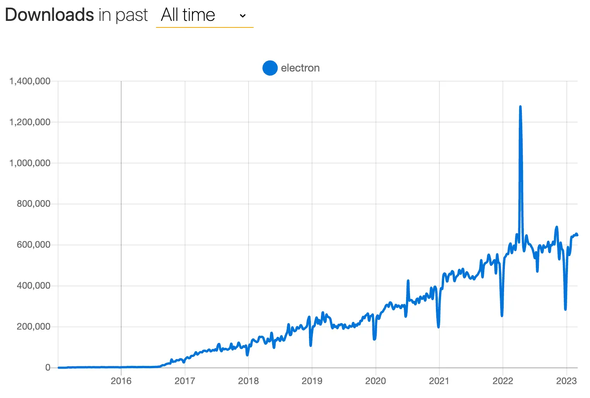
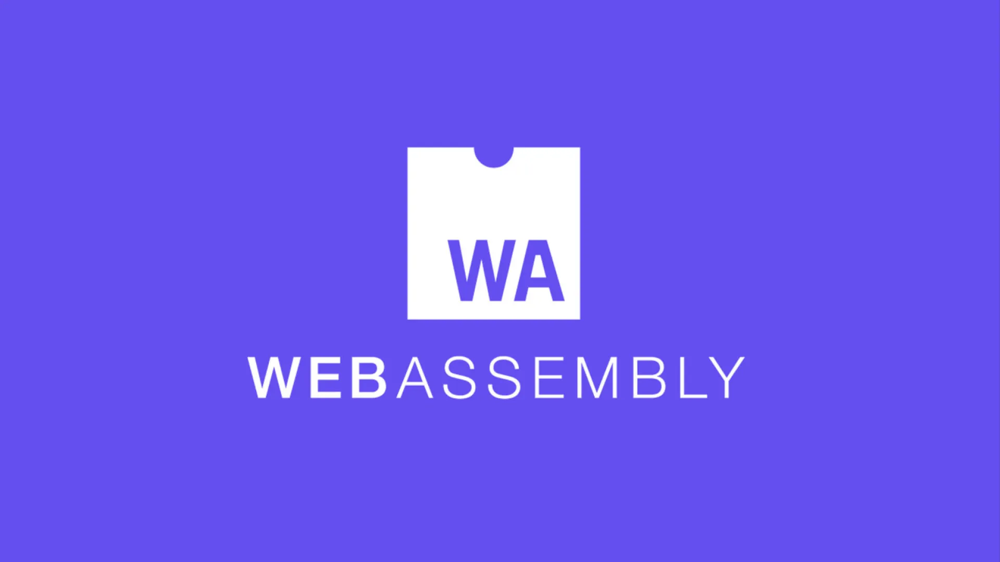

올해 자바스크립트가 30살이 되었습니다.
지난 30년 동안 자바스크립트는 단 10일 만에 만들어진 이상한 스크립트 언어에서 세계에서 가장 인기 있는 프로그래밍 언어로 성장했습니다. 자바스크립트가 어떻게 발전해왔고 앞으로 어떤 방향으로 나아갈지를 보여주는 역사적 순간들을 살펴보겠습니다.
1994
1994년 12월
Netscape, Netscape Navigator 1.0 출시
Netscape Navigator 1.0은 웹 역사의 분기점이었습니다. 1993년에 출시된 모자이크보다 훨씬 빠르고 사용하기 쉬워서 순식간에 최고 인기 브라우저가 되었습니다. 기존 텍스트 기반 브라우저들과는 차원이 다른 세련된 그래픽 인터페이스를 제공했고, HTML 2.0 같은 신기술을 지원했으며, 나중에는 자바스크립트까지 지원하게 됩니다.
1995
1995년 5월
Brendan Eich, 자바스크립트의 첫 번째 버전 생성
Netscape는 당시 대부분 HTML로만 이루어진 정적인 웹에 동적인 요소를 추가하고 싶어했습니다. 마침 같은 시기에 Sun Microsystems가 Java를 출시했고, Netscape는 브라우저에서 Java를 사용할 수 있도록 라이선스를 취득했습니다. 하지만 Java는 웹 디자이너들에게는 너무 복잡했습니다.
그래서 Netscape는 Brendan Eich에게 Java처럼 생겼지만 클래스 기반이 아닌 객체 지향 스크립트 언어를 만들어달라고 요청했습니다. 그리고 단 10일 만에 오늘날 인터넷 대부분을 움직이는 언어가 탄생했습니다. “자바스크립트”라는 이름은 마케팅 전략의 일환으로 지어진 이름입니다. 당시 Java가 핫한 신기술이었기 때문에 그 인기를 활용하려는 의도였습니다.
1995년 12월
Netscape와 Sun, 엔터프라이즈 네트워크와 인터넷을 위한 오픈 크로스플랫폼 객체지향 스크립트 언어인 자바스크립트 발표
자바스크립트는 HTML에 상호작용 기능을 더하는 쉽고 가벼운 스크립트 언어로 세상에 선보였습니다. 이 발표에서 Netscape와 Sun은 새로운 웹의 비전을 제시했는데, Java 객체를 클라이언트에 전달하고 자바스크립트 스크립트로 이를 조작할 수 있다는 것이었습니다. America Online부터 Toshiba Corporation까지 28개 기술 회사가 지원에 나선 것도 눈에 띄는 부분입니다.
1996
1996년 3월
Microsoft, Netscape Navigator에 대항하여 Internet Explorer 3에 JScript 도입
상표권이 있는 “Java”라는 단어를 피하기 위해 지어진 JScript는 Windows 생태계에 맞춰진 자바스크립트의 오픈 구현체였습니다. Netscape의 자바스크립트와 달리, JScript는 Windows의 ActiveXObject와 상호작용할 수 있어서 개발자들이 Internet Explorer에서 Excel 스프레드시트에 연결하는 등의 작업을 할 수 있었습니다.
1 | var ExcelSheet; |
1996년 3월
Netscape Navigator 2.0, 자바스크립트 1.0을 포함하여 출시
자바스크립트가 Netscape Navigator 2.0과 함께 수백만 가정에 첫 선을 보인 순간입니다. 자바스크립트 1.0과 함께 등장한 문서 객체 모델(DOM)은 웹의 기본 구조가 된 또 다른 혁신적 기술이었습니다.
1997
1997년 6월
Netscape, 자바스크립트를 ECMA 인터내셔널에 제출
자바스크립트 생태계가 자바스크립트와 Microsoft의 JScript로 분열되는 것을 막기 위해, Netscape는 자바스크립트를 ECMA 인터내셔널에 제출했습니다. 누구나 사용할 수 있는 벤더 중립적인 표준 언어를 만들겠다는 취지였습니다. 표준 사양을 ECMA-262, 언어명을 “ECMAScript”(상표권 문제로 자바스크립트라는 이름을 쓸 수 없었음)라고 정했고, 자바스크립트와 JScript는 이 표준의 구현체가 되었습니다. 아울러 Netscape, Microsoft, Sun Microsystems 등의 대표들로 구성된 TC39 기술 위원회를 만들어 ECMAScript의 발전 방향을 관리하게 했습니다.
1998
1998년 1월
Netscape, 시장 점유율 감소에 대응하여 Navigator를 오픈소스화한 Mozilla 프로젝트 설립
Microsoft가 Windows에 Internet Explorer를 끼워팔기 시작하면서 Netscape Navigator의 시장 점유율이 급락했습니다. 회사를 살리고 Microsoft에 맞서기 위한 대담한 결정으로, Netscape는 브라우저 코드를 오픈소스화하여 “Mozilla”(내부 코드명으로 “모자이크”와 “킬러”를 합친 말)를 공개했습니다. 커뮤니티가 더 발전되고 표준을 잘 지키는 브라우저 개발에 참여할 수 있도록 한 것입니다. 그 다음날 Netscape의 Jamie Zawinski가 mozilla.org 도메인을 등록했습니다. Mozilla 프로젝트는 Firefox, 탭 브라우징, 브라우저 확장 기능, 그리고 Rust 프로그래밍 언어까지 여러 혁신적인 기술과 제품을 탄생시켰습니다.
1998년 9월
첫 번째 ECMAScript 언어 사양 (ECMAScript 2) 공식 출시
ECMAScript 언어에 새로운 기능이 추가되지는 않았지만, 사양을 깔끔하고 일관성 있게 정리하고 표준화했습니다. 이는 앞으로 나올 모든 버전의 토대가 되었습니다.
1999
1999년 3월
Microsoft, 더 많은 독점 기술을 사용하는 Internet Explorer 5 출시
Microsoft는 Internet Explorer 5에 XMLHttpRequest를 도입했습니다. XMLHttpRequest는 자바스크립트를 통해 HTTP 요청을 보낼 수 있도록 하는 최초의 실용적 방법이었습니다.
1 | // How to send an HTTP request in IE5. |
1999년 4월
JSDoc 데뷔
자바의 Javadoc을 참고해 개발한 JSDoc은 자바스크립트 문서화에 체계적인 표준을 제시했습니다. 이로써 자바스크립트는 보다 전문적인 언어로 거듭나게 되었고, 현대 IDE의 자동완성과 타입 힌트 기능의 토대를 마련했습니다. 오늘날에도 deno doc이나 jsr.io의 자동 문서 생성 등 다양한 도구에서 핵심 역할을 하고 있습니다.
1 | /** |
1999년 12월
ECMAScript 3 출시 - do-while, 정규식, 새로운 문자열 메서드(concat, match, replace, slice, split), 예외 처리 등 포함
ECMAScript 3은 자바스크립트 역사상 중요한 전환점이었습니다. 이전까지 단순한 스크립트 언어로 여겨지던 자바스크립트가 본격적인 프로그래밍 도구로 거듭났습니다. 이후 10년 넘게 브라우저 스크립팅의 표준이 되었고, 웹 개발 언어로서 자바스크립트의 정체성을 확립한 버전으로 평가받고 있습니다.
2001
2001년 4월
첫 번째 JSON 메시지가 전송됨
주요 내용은 다음과 같습니다.
1 | <html><head><script> |
2002
2002년 6월
모든 자바스크립트 구문 검사기의 원조, JSLint 등장
Douglas Crockford가 만든 JSLint는 최초의 자바스크립트 정적 코드 분석 도구였습니다. 당시 자바스크립트는 널리 사용되었지만 제대로 이해되지 않았고, 규율 없이 작성되었습니다. JSLint는 코드 품질을 향상시키고자 했습니다. JSLint가 강제한 강한 의견들은 Crockford의 책 JavaScript: The Good Parts」 (한국어판: 「자바스크립트 핵심 가이드」)에 영향을 주었습니다.
2002년 9월
Mozilla, Internet Explorer와 경쟁하기 위해 Firefox의 전신인 Phoenix 0.1 출시
Mozilla Application Suite의 느리고 무거운 성능에 한계를 느낀 소규모 팀이 Phoenix(Netscape와 Mozilla Suite의 잿더미에서 브라우저가 다시 태어남을 의미)라는 미니멀한 웹 브라우저를 만들었습니다. 당시 Internet Explorer는 90%의 시장 점유율을 차지했고, 혁신은 정체되어 있었습니다. Phoenix는 인터넷 사용자들에게 빠른 속도, 간단한 UI, 탭 브라우징, 팝업 차단 기능 등 새로운 가치를 제공했습니다. 이는 사용자 중심의 오픈소스 브라우저의 재탄생을 의미했고, Firefox의 기반이 되었으며, 브라우저 시장에서 Microsoft의 독점을 깨뜨렸습니다.
2003
2003년 1월
Apple, Safari 및 WebKit 도입
Apple CEO Steve Jobs가 Safari를 “Mac OS X용 터보 브라우저”로 발표했습니다. 가장 중요한 것은 이전에 Mac용 Internet Explorer에 의존했던 Apple의 Microsoft 종속성을 끝냈다는 것입니다. 또한 이는 몇 년 후 iPhone과 함께 등장할 Mobile Safari의 길을 열었습니다. Safari는 KHTML 브라우저 엔진을 포크한 WebKit을 기반으로 합니다.
2004
2004년 4월
새로운 비동기 자바스크립트 프로토콜 “AJAX”를 사용하는 Gmail 베타 버전 출시
Gmail 출시는 웹 개발 역사에 한 획을 그은 사건이었습니다. AJAX 덕분에 Gmail은 당시로서는 상상할 수 없었던 빠르고 반응성 좋은 사용자 경험을 제공할 수 있었고, 이로써 웹 애플리케이션의 새로운 Web 2.0 시대가 열렸습니다.
2005
2005년 2월
Jesse James Garrett, 「Ajax: 웹 애플리케이션의 새로운 접근법」에서 “AJAX” 용어 창안
Ajax는 asynchronous JavaScript and XML(비동기 자바스크립트와 XML)의 줄임말로, 페이지를 새로고침하지 않고도 서버와 데이터를 주고받을 수 있게 해주는 클라이언트 사이드 기술 모음입니다. 이 기술 덕분에 풍부하고 끊김 없는 사용자 경험을 제공하는 완전히 새로운 종류의 웹 앱과 프레임워크가 등장할 수 있었습니다.
1 | <script type="text/javascript"> |
2005년 3월
Mozilla Corporation, MDN의 전신인 DevMo By Mozilla 출시
Mozilla가 DevMo By Mozilla를 시작했고, 이것이 나중에 MDN (Mozilla Developer Network)이 되었습니다. MDN은 정확하고 벤더 중립적이며 표준에 기반한 문서를 제공하면서 웹 표준을 배우는 허브 역할을 했습니다. 브라우저 호환성 문제가 심각하고 문서들이 여기저기 흩어져 있거나 오래되어 일관성이 없던 상황에서 등장한 것입니다. MDN은 순식간에 웹 개발자들의 바이블이 되었고, 개발자 문서의 새로운 기준을 제시했습니다.
2006
2006년 3월
John Resig, jQuery 첫 커밋 생성
jQuery는 HTML DOM 조작, 이벤트 처리, Ajax 등을 쉽게 만들어주는 자바스크립트 라이브러리로, 골치 아픈 브라우저 호환성 문제를 해결하기 위해 탄생했습니다. 잘 정리된 간결한 API로 개발자 경험의 새로운 기준을 제시했고, 실제 웹페이지 사용량 기준으로는 지금도 가장 많이 쓰이는 자바스크립트 라이브러리입니다.
1 | <script src="https://code.jquery.com/jquery-1.0.0.min.js"></script> |
2007
2007년 1월
최초의 Apple iPhone, 모바일 사파리에 플래시 배제하고 출시
플래시를 배제한 것은 의도적이면서도 논란이 많은 결정이었습니다. 당시 플래시는 인터랙티브 멀티미디어의 90%를 담당했습니다. 하지만 Steve Jobs는 높은 리소스 요구사항, 충돌 발생 가능성, 그리고 독점적 성격 때문에 플래시에 반대했습니다. 개발자들은 이것을 모바일 웹 콘텐츠의 미래가 플래시에 의존하지 않을 것이라는 신호로 받아들였습니다.
2008
2008년 2월
Netscape 내비게이터 서비스 종료로 “첫 번째 브라우저 전쟁” 종결
AOL이 공식적으로 Netscape Navigator 개발을 중단했습니다. Netscape Navigator는 90년대 전성기에 90% 이상의 시장 점유율을 차지했던 지배적인 브라우저로, 초기 인터넷에서 가장 영향력 있는 웹 브라우저 중 하나였습니다. 이로써 한 시대가 막을 내렸습니다. Microsoft가 Internet Explorer를 Windows에 기본 탑재하면서 시장 주도권을 빼앗았고, 이는 결국 기술 업계 규제의 판도를 바꾼 Microsoft 반독점 소송으로 이어졌습니다.
2008년 5월
Douglas Crockford, 「JavaScript: The Good Parts」(한국어판: 「자바스크립트 핵심 가이드」) 출판
이 책은 이전에 나쁜 설계와 혼란스러운 동작으로 조롱받았던 자바스크립트를 진지한 언어로 재평가했습니다.
2008년 9월
Google, 당시 가장 빠른 웹 브라우저인 Chrome 브라우저 출시. V8 엔진과 함께 제공
당시 Internet Explorer, Firefox, Safari 같은 브라우저들은 상대적으로 느렸고, 자바스크립트 실행 속도에는 별로 신경 쓰지 않았습니다. Chrome은 새로운 V8 자바스크립트 엔진으로 속도에 올인한 브라우저였습니다. V8의 혁신적인 점은 자바스크립트를 실행 전에 네이티브 머신 코드로 컴파일하고, JIT 컴파일을 구현하며, 가비지 컬렉션으로 메모리를 더 효율적으로 관리한다는 것이었습니다. Google은 곧 V8을 오픈소스로 공개해서 개발자들이 이를 기반으로 뭔가를 만들 수 있게 했는데, 그 중에서도 가장 주목할 만한 것이 바로 Node.js 프로젝트입니다.
2009
2009년 1월
자바스크립트 코드 공유를 위한 사양인 CommonJS(원래 이름은 ServerJS) 등장
이 시점부터 자바스크립트가 브라우저를 벗어나 서버 영역으로 진출하기 시작했습니다. 점점 더 큰 프로젝트들이 만들어지면서 자바스크립트에는 방대한 소스 코드를 관리할 수 있는 더 나은 방법, 즉 모듈화가 필요해졌습니다. CommonJS의 역사와 오늘날까지의 발전 과정에 대한 자세한 내용은 이 블로그 포스트를 참고하시기 바랍니다.
2009년 3월
Ryan Dahl, Node.js 작업 시작
크로스플랫폼 오픈소스 자바스크립트 런타임 환경인 Node.js는 웹 브라우저 밖에서도 자바스크립트를 실행할 수 있게 해줬습니다. Node.js 덕분에 개발자들은 웹 서버부터 풀스택 애플리케이션까지 모든 것을 자바스크립트 하나로 만들 수 있게 되었습니다. 현재 Node는 전체 웹사이트의 약 3.5%(서버 정보가 알려진 사이트 기준)에서 사용되고 있으며, 여전히 웹 개발의 핵심 기술로 자리잡고 있습니다.

Node.js 프로젝트에 대한 심층적인 내용은 이 1시간짜리 다큐멘터리를 확인하시기 바랍니다.
2009년 4월
Oracle, Sun Microsystems 인수 및 자바스크립트 상표권 획득
Oracle은 Sun Microsystems와 Java 소유권을 인수하여 엔터프라이즈 기술 시장에서의 입지를 강화했습니다. 거래의 일환으로 Oracle은 자바스크립트 상표권을 획득하여 언어의 미래에 혼란을 야기했습니다. 상표권에 대한 오라클로부터 #FreeJavaScript를 위한 우리의 현재 노력에 대해 더 자세히 읽어보시기 바랍니다.

2009년 6월
Express.js의 첫 번째 커밋 생성됨
Express.js는 Node.js 생태계의 절대 강자로 자리잡은 웹 프레임워크입니다. 미니멀하면서도 강력한 설계 철학으로 모듈형 미들웨어 아키텍처를 도입해 RESTful API 개발의 새로운 패러다임을 제시했습니다. 이후 등장한 Koa, Nest, Fastify 등 수많은 프레임워크들이 Express의 영향을 받았을 정도로 업계 표준이 되었습니다. 한때 개발이 정체되어 커뮤니티가 우려했던 시기도 있었지만, 현재는 버전 5까지 발전하며 여전히 활발한 생명력을 보여주고 있습니다.
2009년 12월
ECMAScript 5 출시 - strict mode, getter와 setter, 새로운 배열 메서드, JSON 지원, string.trim(), 객체 리터럴의 후행 쉼표 등이 추가됨
ECMAScript 5는 10년 만에 나온 언어의 첫 번째 대규모 업데이트였습니다. 자바스크립트를 더욱 강력하고 안전하며 유지보수하기 쉽게 만드는 기능들이 대거 추가되었습니다.
2009년 12월
CoffeeScript 프로젝트에 첫 번째 커밋 생성됨
CoffeeScript는 더 깔끔한 문법(불필요한 코드 줄임), 화살표 함수(정식 화살표 함수보다 먼저), ES6 이전의 구조 분해 할당 등 개발 편의성을 높여주는 기능들 덕분에 빠르게 인기를 얻었습니다.
2010
2010년 1월
npm 1.0 출시
Node와 자바스크립트를 위한 패키지 저장소인 npm은 자바스크립트 공유 방식을 완전히 바꿔놓았습니다. 지금은 300만 개가 넘는 패키지를 보유한 세계 최대의 오픈소스 저장소가 되었습니다.
2010년 5월
JetBrains의 새로운 자바스크립트 IDE인 WebStorm 1.0 출시
WebStorm 이전의 텍스트 에디터들은 자바스크립트에 대한 기본적인 기능만 제공했습니다. WebStorm은 코드 분석, 오류 감지, JS/HTML/CSS 자동완성, 자바스크립트 전용 디버깅 도구 등의 고급 기능을 갖춘 최초의 전문 자바스크립트 IDE였습니다.
2010년 10월
AngularJS와 Backbone.js 출시
자바스크립트가 발전하고 개발자들이 더 복잡한 서버와 애플리케이션을 만들 더 새롭고 빠르고 쉬운 방법을 찾으면서, 두 개의 풀스택 프레임워크 — AngularJS와 Backbone — 이 등장했습니다. 각기 다른 이유로 인기를 얻었는데, Angular는 선언적이고 강한 주장이 있었고, Backbone은 명령형이면서 미니멀했습니다. 이 시점은 현대적인 단일 페이지 애플리케이션(“SPA”)의 시작이자, 수많은 자바스크립트 프레임워크가 급속히 등장했다 사라지는 “프레임워크 대혼란”의 서막이기도 합니다.
2011
2011년 6월
Microsoft와 Joyent, Node.js를 Windows로 이식
2011년에 Joyent의 Ryan Dahl과 Bert Belder(현재 Deno 공동 창립자/CTO)가 Node.js를 Windows로 이식했는데, 이는 Node.js가 Unix 계열 시스템을 넘어 확장되는 중요한 전환점이었습니다. 이 작업의 산물 중 하나가 Linux, OSX, Windows에서 비동기 네트워킹을 위한 통합 인터페이스를 제공하는 라이브러리 libuv였습니다. 이는 Node.js의 성장을 가속화했을 뿐만 아니라 Microsoft의 광범위한 오픈소스 전략의 발판을 마련했고, 결국 개발자 생태계를 변화시키며 TypeScript, VS Code, Azure Cloud Integration 같은 미래 프로젝트들의 길을 열었습니다.
2012
2012년 3월
모듈 번들러 Webpack 등장
Webpack은 개발자들이 클라이언트 사이드에서 뭐든지 임포트할 수 있게 해줬고, 결국 React, Angular, Vue 등의 핵심 빌드 시스템이 되었습니다. 이후 Rollup, Parcel, Vite, esbuild 같은 도구들의 토대를 마련하기도 했습니다.
2012년 10월
Microsoft, TypeScript 0.8 공개
2010년에 Anders Heljsberg(C#과 Turbo Pascal을 만든 그 사람)이 TypeScript라는 자바스크립트의 정적 타입 확장판을 개발하기 시작했습니다. 이 프로젝트의 목표는 대규모 자바스크립트 작성과 유지보수를 쉽게 만드는 것이었습니다. 2012년에 Microsoft가 이를 공개했습니다. TypeScript는 자바스크립트 생태계에서 기업급 개발의 문을 열었고, ECMAScript 자체 설계에도 영향을 주었으며, 자바스크립트로 대형 애플리케이션을 만드는 방식을 완전히 바꿔놓았습니다.
1 | function add(x: number, y: number): number { |
2013
2013년 3월
Atom Shell(나중에 Electron으로 이름 변경)에 첫 번째 커밋 생성됨
Atom Shell(2015년에 Electron으로 개명)은 HTML, CSS, 자바스크립트 같은 웹 기술로 크로스플랫폼 데스크톱 앱을 만드는 진입장벽을 확 낮춰줬습니다. Node.js와 Chromium을 사용해서 개발자들이 파일시스템, 네트워크, 네이티브 OS API에 접근할 수 있었습니다. 원래 2014년 4월 공개 베타로 나온 GitHub의 Atom 텍스트 에디터를 위해 만들어졌는데, Slack 같은 유명한 얼리어답터들이 Atom Shell을 사용했습니다. 이 프레임워크는 웹 기술로 데스크톱 애플리케이션을 만들 수 있는 새로운 시대를 여는 데 결정적인 역할을 했습니다.

2013년 2월
Mozilla, asm.js 출시
asm.js는 웹에서 네이티브급 성능을 구현하기 위해 설계된 자바스크립트의 엄격한 부분집합입니다. 이전까지 자바스크립트는 3D 게임이나 동영상 처리 같은 CPU 집약적인 애플리케이션에는 부적합하다고 여겨졌습니다. 개발자들은 C/C++ 코드를 asm.js로 변환해서 기존 네이티브 애플리케이션을 브라우저에서 돌릴 수 있게 되었습니다. 이는 연산 집약적 애플리케이션을 위한 본격적인 런타임으로서 자바스크립트가 진화하는 데 있어 엄청난 도약이었고, 몇 년 후 WebAssembly가 나올 수 있는 토대를 마련했습니다.
1 | (function Module(stdlib, foreign, heap) { |
2013년 4월
Valeri Karpov, “MEAN” 스택 용어 창안
MEAN 스택은 MongoDB, Express.js, AngularJS, Node.js를 아우르는 풀스택 자바스크립트 프레임워크를 의미합니다. 이 용어는 현대 자바스크립트 기반 웹 개발을 형성하는 데 엄청난 영향을 미쳤습니다.
2013년 5월
Facebook, React 출시
Facebook(현재 Meta)의 소프트웨어 엔지니어 Jordan Walke가 만든 React는 선언적으로 사용자 인터페이스를 만들기 위한 자바스크립트 라이브러리입니다. 2011년 Facebook 뉴스피드에서 처음 도입되었고, 2013년 5월 JSConf US에서 일반에 오픈소스로 공개되었습니다. React의 컴포넌트 중심 인터페이스 구축 방식은 오늘날 앱에서 쓰이는 선언적 UI 패턴을 확실히 자리잡게 했습니다.
2013년 6월
ESLint 작업 시작
유명한 자바스크립트 개발자이자 Yahoo! User Interface Library(YUI)의 전 리드 개발자인 Nicholas C. Zakas가 자바스크립트 코드 문제를 찾아내고 고치는 플러그인 방식의 설정 가능한 린터 도구 ESLint 작업을 시작했습니다. ESLint는 순식간에 자바스크립트 개발자들의 필수 도구가 되었고, 기존 린팅 도구의 한계를 해결하며 코드 품질과 일관성의 새로운 기준을 제시했습니다.
2013년 7월
Gulp 출시
Eric Schoffstall이 웹 개발 작업 자동화를 위한 스트리밍 빌드 시스템 Gulp.js를 출시했습니다. Gulp은 간단하고 코드 중심적인 방식으로 압축, 컴파일, 린팅, 테스트 같은 반복 작업을 처리하는 새로운 방법을 제시했습니다. 설정이 복잡했던 Grunt 같은 기존 태스크 러너의 강력하고 코드 중심적인 대안으로 빠르게 인기를 얻었고, 현대 빌드 도구 발전에도 영향을 미쳤습니다.
2014
2014년 2월
Vue.js 출시
전 Google 엔지니어 Evan You가 사용자 인터페이스 구축을 위한 점진적 자바스크립트 프레임워크 Vue.js를 출시했습니다. 당시 다른 프레임워크들과 달리 Vue.js는 접근하기 쉽고, 단계별로 도입할 수 있으며, 고성능으로 설계되어 현대 자바스크립트 생태계에서 가장 인기 있고 영향력 있는 프레임워크 중 하나가 되었습니다.
2014년 7월
StrongLoop, 오픈소스 프레임워크 Express 인수
엔터프라이즈급 Node.js 솔루션을 전문으로 하는 StrongLoop(Deno 공동 창립자 Bert Belder도 공동 창립)이 Express.js의 소유권을 획득했습니다. 목표는 API와 마이크로서비스에 특화된 통합 도구 생태계의 핵심으로 만드는 것이었습니다. 하지만 커뮤니티는 Express의 독립성이 기업 인수로 인해 훼손될 것을 우려했고, 이런 불안감이 Koa 같은 대안 프레임워크 탄생의 원동력이 되었습니다. 이후 2015년 IBM이 StrongLoop을 인수했고, 2019년에 Express.js가 OpenJS Foundation에 합류하면서 중립적 거버넌스를 되찾고 장기적 지속가능성을 확보했습니다. Express 4.x에서 무려 10년을 보낸 후, Express 5가 드디어 2024년 10월에 세상의 빛을 보게 되었습니다.
2014년 9월
Babel.js에 첫 번째 커밋 생성됨
원래 6to5라는 이름이었던 Babel.js는 개발자들이 현대적인 자바스크립트를 작성하고 오래된 브라우저와 엔진에서 하위 호환되도록 만드는 자바스크립트 컴파일러입니다. Babel은 곧 생태계의 표준 도구로 자리잡았고, React, Vue, Angular와 같은 인기 있는 프레임워크와 Webpack, Rollup, Parcel과 같은 모듈 번들러에 통합되었습니다.
2014년 10월
Meteor 1.0 배포
Meteor은 실시간, 자바스크립트 전용, 전체 스택 애플리케이션을 구축하는 근본적으로 더 간단한 방법으로 웹 개발 커뮤니티에서 큰 반향을 일으켰습니다. 개발자들이 현대적이고 반응적이며 실시간 웹 애플리케이션을 구축하는 방법에 대해 생각하는 방식을 형성하는 데 중요한 역할을 했습니다. 생태계가 발전하면서 Meteor의 전반적인 인기는 줄어들었지만, 생태계에 미친 영향은 React, Redux, Firebase, GraphQL 등에서 볼 수 있습니다.
2014년 11월
Facebook, 자바스크립트용 정적 타입 검사기 Flow 출시
Flow는 개발 중에 버그와 타입 오류를 잡는 데 도움이 되는 자바스크립트용 정적 타입 검사기입니다. Facebook은 거대한 코드베이스를 더 잘 유지하고 개발자 생산성을 향상시키는 방법으로 개발했습니다. 하지만 2010년대 후반에 TypeScript가 지배적인 타입 자바스크립트 언어가 되면서 Flow의 쇠퇴로 이어졌습니다.
2014년 11월
아마존, Node.js로 구동되는 AWS Lambda 발표
이미 클라우드 컴퓨팅의 시장 선도자였던 Amazon Web Services는 Lambda와 함께 새로운 서버리스 패러다임을 도입했는데, 이는 개발자들이 인프라를 프로비저닝하지 않고도 코드를 업로드하고 이벤트에 응답하여 실행할 수 있게 했습니다. 출시 당시 Lambda 함수는 Node.js와 함께 자바스크립트만 지원했는데, 이는 Node.js의 이벤트 기반, 논블로킹 모델이 Lambda의 무상태 및 단기 실행 환경에 잘 맞았기 때문입니다. AWS Lambda의 도래는 Function-as-a-Service 개념을 도입했고 서버리스 컴퓨팅 운동을 시작했으며, Google과 Microsoft가 1-2년 후에 자체 버전을 출시했습니다.
2014년 12월
Fedor Indutny, Node.js의 포크인 io.js 생성
당시 Joyent이 유지보수하던 Node.js는 릴리스가 느렸고 오래된 V8 버전으로 인해 현대적인 자바스크립트 기능에 대한 지원이 부족했습니다. 많은 개발자들이 Node.js가 충분히 빠르게 발전하지 못한다고 좌절했는데, 특히 브라우저와 프론트엔드 세계의 빠른 발전에 비해 그랬습니다. 따라서 포크인 io.js가 생성되었습니다. 나중에 io.js를 다시 Node.js로 병합할 계획이었습니다.
2015
2015년
Netlify의 CEO Matt Biilmann, “Jamstack” 용어 창안
Jamstack(“Jam”은 JavaScript, API, Markup의 줄임말)은 더 나은 성능, 확장성, 개발자 경험을 제공하는 프론트엔드 개발 아키텍처 패턴입니다. 이는 개발자들이 SPA 아키텍처에서 벗어나 SSR과 SSG로 옮겨가는 현대 웹 개발의 새로운 시대의 시작을 알리는 신호였습니다.
2015년 2월
Node.js Foundation 설립
Linux Foundation 산하에서 Node.js Foundation이 설립되었는데, 프로젝트 분열 문제를 해결해서 Node.js의 개발과 도입을 촉진하겠다는 목적이었습니다. 당시 Node.js의 주요 포크였던 io.js는 더 빠른 릴리스와 더 나은 거버넌스를 원하는 전 Node.js 기여자 그룹이 관리하고 있었는데, 2015년 6월에 Node.js로 다시 합쳐졌습니다. Node.js Foundation은 IBM, Microsoft, PayPal, Intel, Fidelity, Joyent, Linux Foundation 등 주요 기술 기업들의 지원을 받았습니다.
2015년 9월
API를 위한 쿼리 언어 GraphQL 출시
Facebook은 2012년에 선언적으로 사용할 수 있는 데이터 쿼리 언어 GraphQL을 개발하기 시작했습니다. GraphQL은 서버 왕복 횟수를 줄이고 강력한 타입 시스템으로 데이터에 접근하고 변경하는 새로운 방법을 제시했습니다.
2015년 6월
Redux 출시
React로 앱을 만드는 개발자가 점점 늘어나면서 상태 관리의 필요성이 커졌습니다. 이를 해결하기 위해 예측 가능한 상태 컨테이너 Redux가 등장했습니다. 지금은 Redux를 다양한 JavaScript 프레임워크와 함께 사용할 수 있습니다.
2015년 6월
WebAssembly 출시
WebAssembly는 브라우저에서 자바스크립트의 성능 한계를 해결하려는 목적으로 만들어졌습니다. 게임, 동영상 편집 등 연산 집약적인 애플리케이션을 고속으로 실행할 수 있게 해줬습니다. 또한 C/C++ 같은 언어로 작성된 코드를 웹에서 안전하고 이식 가능하게 실행할 수 있는 방법도 제공했습니다.

2015년 6월
“해킹 가능한” 텍스트 에디터 Atom 출시
Atom은 웹 기술로만 만들어진 최초의 고도로 확장 가능한 데스크톱 에디터 중 하나였습니다. 깊이 있는 커스터마이징을 내세워 개발자들이 패키지와 테마로 UI부터 핵심 동작까지 모든 걸 마음대로 조정할 수 있게 했습니다. Atom은 Atom Shell(지금의 Electron)을 크로스플랫폼 데스크톱 앱 개발 프레임워크로 입증했을 뿐만 아니라, 개발자들이 텍스트 에디터를 단순한 도구가 아닌 플랫폼으로 바라보는 시각을 바꿔놓았습니다. Atom의 핵심 아이디어를 받아들이고 발전시킨 VS Code 같은 현대적이고 확장 가능한 웹 기반 도구들의 등장에도 영감을 주었습니다.
2015년 7월
ECMAScript 6 (ES2015) 출시
ES6가 출시되면서 자바스크립트는 드디어 개발자들이 그토록 원했던 많은 기능들을 갖게 되었습니다. fetch API와 import, export를 사용하는 ESM 네이티브 모듈 시스템 같은 것들 말입니다.
1 | <script type="text/javascript"> |
2015년 9월
Node.js v0.12와 io.js를 병합한 Node.js v4.0 출시
Node.js v4.0은 단일 코드베이스로 결합된 Node.js와 io.js 프로젝트에서 수많은 시간의 작업을 대표합니다. 많은 npm 모듈이 하나 또는 다른 런타임과 호환되지 않는 분열된 커뮤니티를 종결시킨 이 병합은 또한 장기 지원 일정과 새로운 시맨틱 버저닝 체계를 가져왔습니다. 병합의 성공은 오픈 거버넌스와 커뮤니티 협업의 힘을 보여주었습니다.
2016
2016년 1월
Microsoft, Edge의 Chakra 자바스크립트 엔진 오픈소스화
Microsoft는 Chakra를 오픈소스로 공개하여 외부 기여자를 유치하고 Edge 브라우저를 넘어선 채택을 증가시키고자 했습니다. 개발자들로부터 상당한 초기 관심을 끌었고, Microsoft는 심지어 Chakra에서 실행되는 Node.js 버전도 출시했습니다. 그러나 V8은 거대한 커뮤니티와 광범위한 도구로 인해 여전히 지배적인 엔진으로 남아있었습니다. 2021년에 Microsoft는 V8 엔진에 의존하는 Chromium 기반 Edge로 전환하기 시작하면서 Chakra의 폐지를 발표하고 활발한 개발을 중단했습니다.
2016년 3월
Azer Koculu, npm에서 Leftpad를 제거하여 의도치 않게 수백만 사용자에 영향을 미치는 공급망 공격 초래
일반적으로 “npm Leftpad 사건”으로 알려진 이 사건에서 Azer는 Kik Messenger와의 분쟁 후 npm에서 left-pad를 제거했습니다. 그 결과, React와 Babel을 포함하여 left-pad를 의존성으로 사용하는 수천 개의 프로젝트가 빌드되거나 설치될 수 없게 되었습니다. 이는 Meta, Netflix, Spotify와 같은 주요 기술 기업들에 걸쳐 큰 혼란을 야기했고, JavaScript 생태계에서 공급망 취약점이 가질 수 있는 놀라운 규모를 부각시켰습니다. 이후 npm은 사용자가 자신의 패키지를 제거할 수 있는 능력을 제한하는 정책을 변경했습니다.
2016년 4월
Microsoft, 가볍고 빠른 크로스 플랫폼 IDE VSCode 1.0 출시
웹 기술(Electron, TypeScript)로 구축되었을 뿐만 아니라, 최고 수준의 JavaScript와 TypeScript 지원을 제공했습니다. 이는 빠르게 Sublime Text, Atom 및 기타 전체 IDE들을 혼란에 빠뜨렸습니다.
2016년 6월
ECMAScript 2016 출시 - 지수 연산자(**)와 array.includes() 메서드 등 포함
2016년 9월
Angular (Angular2) 출시
Angular는 원래 AngularJS 프레임워크의 완전한 재상상이었으며, 원래 프레임워크의 많은 단점을 해결하기 위해 처음부터 작성되었습니다. 주요 차이점으로는 Model-View-Controller를 컴포넌트 트리 구조로 대체하고, 더 나은 전체 도구를 가능하게 하는 TypeScript를 채택하며, 성능과 보안을 위한 Ahead-of-Time 컴파일이 포함됩니다. Angular는 그 구조와 의견이 있는 프레임워크로 인해 대규모 엔터프라이즈 애플리케이션의 최고 선택이 되었습니다.
2016년 10월
Next.js 1.0 출시
Next.js는 React, Webpack, Babel을 기반으로 구축된 서버 렌더링 유니버설 JavaScript 웹 애플리케이션을 위한 작은 프레임워크로 시작했습니다. Next.js는 React로 서버 사이드 렌더링을 간단하게 만들어 풀스택 React 앱의 길을 열었습니다. Next.js를 사용하면 개발자들이 콘텐츠가 많고 SEO 중심의 웹사이트에 React를 사용할 수 있습니다. 이 프레임워크는 결국 프로덕션급 React 앱의 기본 프레임워크가 됩니다.
2017
2017년 3월
Temporal 제안의 초기 커밋 생성
Temporal 제안은 JavaScript의 내장 Date 객체의 불변성 부족, 시간대 및 일광절약시간 지원 부족, 일관성 없는 파싱과 같은 오랜 문제에 대한 해결책으로 도입되었습니다. 2021년에 Temporal 제안은 ECMAScript 표준에 포함되도록 승인되었습니다. 그러나 현재 Temporal API를 지원하는 유일한 환경은 Firefox Nightly와 Deno입니다.
2017년 4월
Prettier 1.0 출시
Prettier는 코드를 파싱하고 자체 규칙으로 다시 출력하여 일관된 코드 스타일을 강제하는 의견이 있는 코드 포맷터로, 일관성 없는 포맷팅으로 인해 코드 리뷰에서 낭비되는 시간을 줄이는 것을 목표로 했습니다. ESLint와 같은 도구들은 문제 감지에 집중했지만 자동으로 포맷팅을 수정하지는 않았는데, 이것을 Prettier가 도입했습니다. Prettier는 또한 먼저 작성하고 나중에 포맷하는 워크플로우를 촉진하여 더 깔끔한 코드와 협업으로 이어졌습니다. 그 영향은 JavaScript를 넘어서 확장되었습니다. Python 프로젝트들은 Black을 채택했고, Rust는 포맷터를 툴체인의 일부로 추가하여 포맷팅을 협상 불가능한 빌드 단계로 취급했습니다.
2017년 6월
ECMAScript 2017 출시 - 문자열 패딩, Object.entries(), Object.values(), async 함수 등 포함
2017년까지 모든 현대 브라우저(IE11 제외)에서 fetch()에 대한 브라우저 지원이 강력해졌고, 많은 개발자가 async/await를 사용하고 있었습니다(Babel과 함께 또는 없이).
1 | <script> |
2017년 9월
Facebook, 새로운 패키지 매니저 Yarn 출시
Yarn은 당시 npm의 고통점인 속도, 신뢰성, 일관성을 해결하기 위해 만들어졌습니다. Yarn은 yarn.lock을 사용한 결정적 의존성 해결, 자동 패키지 캐싱, 병렬 설치 등의 개념을 도입했습니다.
2017년 9월
Cloudflare, 개발자가 Edge에서 JavaScript를 실행할 수 있게 하는 Cloudflare Workers 출시
Cloudflare Workers는 서버리스 원칙과 Edge 분산(당시 약 100개의 데이터 센터, 현재 300개 이상) 및 빠르고 확장 가능한 격리를 결합하여 서버리스 Edge 컴퓨팅의 현대 시대를 열었습니다. Edge 분산은 서버리스 코드가 최종 사용자 가까이에서 실행될 수 있어 지연 시간을 최소화한다는 의미였습니다. Cloudflare Workers가 경량 V8 격리(컨테이너나 마이크로-VM 대신)를 기반으로 구축되어 콜드 스타트 시간도 최소화되었습니다. Cloudflare Workers의 도래는 Cloudflare를 웹사이트의 보안과 성능을 제공하는 CDN 회사에서 완전한 웹 애플리케이션 플랫폼으로 변화시켰을 뿐만 아니라, Netlify, Vercel, Deno Deploy와 같은 다른 플랫폼들이 격리 기반 엣지 함수를 추가할 수 있는 길을 열었습니다.
2018
2018년 1월
Google, 브라우저 자동화 도구의 주요 이정표를 남긴 Puppeteer 1.0 출시
여러 언어 바인딩이 필요한 Selenium과 같은 다른 브라우저 자동화 도구와 달리, Puppeteer는 Node.js를 위해 특별히 구축되어 헤드리스 Chrome을 제어하기 위한 더 현대적이고 JavaScript 우선의 API를 제공했습니다. Puppeteer의 출시는 Chromium을 자동화를 위한 기본 브라우저 엔진으로 확립했고, PhantomJS의 쇠퇴를 이끌었으며, Playwright와 Cypress와 같은 프레임워크의 개발에 영향을 주었습니다.
2018년 3월
컴퓨팅 없이 WebGL 또는 WebGPU를 통해 브라우저에 머신러닝을 도입할 수 있게 해주는 TensorFlow.js 출시
TensorFlow는 Google이 2015년에 오픈소스 머신러닝(ML) 네트워크로 출시했으며, 빠르게 ML 연구의 필수 도구가 되었습니다. TensorFlow.js는 웹 개발자들이 Python 없이 ML 모델을 구현하고, ML 모델을 웹 앱에 임베딩하여 실시간 예측과 브라우저 기반 AI 애플리케이션을 가능하게 하는 진입 장벽을 낮췄습니다.
2018년 6월
ECMA TC39의 “Smoosh gate”, 이름을 flatten에서 flat으로 변경하여 해결됨
2018년에 TC39는 중첩된 배열을 평탄화하기 위해 자바스크립트 배열에 flatten이라는 새로운 메서드를 추가하는 것을 제안했습니다. 그러나 이 이름은 인기 있는 자바스크립트 라이브러리인 MooTools에서 사용하는 기존 메서드와 충돌했는데, MooTools는 제안된 구현과 호환되지 않는 방식으로 해당 메서드를 정의했습니다. 이에 대응하여 일부 TC39 멤버들이 농담으로 메서드 이름을 flatten에서 smoosh로 바꾸는 것을 제안했습니다. 진지하게 받아들일 의도는 아니었지만, 토론과 밈에서 주목을 받았습니다.
2018년 6월
Ryan Dahl, 강연에서 Node.js에 대한 후회와 새로운 프로젝트 언급
2018년에 Ryan Dahl은 널리 시청된 강연 “Node에 대해 후회하는 10가지”에서 “Deno”(Node의 애너그램)라는 새로운 자바스크립트 런타임을 발표했습니다.
2018년 10월
ECMAScript 2018 출시 - rest/spread 속성, async 반복, promise.finally() 등 포함
2019
2019년 3월
JavaScript Foundation과 Node.js Foundation이 합병하여 OpenJS Foundation 설립
당시 자바스크립트 오픈소스 생태계는 여러 재단에 걸쳐 분열되어 있었고, 각각이 다른 프로젝트를 관리하고 있었습니다. Node.js와 서버 사이드 자바스크립트에 집중하는 Node.js Foundation이 있었습니다. 그 다음에는 jQuery, ESLint, Lodash와 같은 클라이언트 사이드 라이브러리를 관리하는 JavaScript Foundation(구 jQuery Foundation)이 있었습니다. 두 재단 모두 독립적으로 운영되어 중복되는 자원과 자바스크립트 프로젝트에 대한 분열된 지원을 초래했습니다. 그러나 Node.js가 자바스크립트의 사실상의 백엔드 런타임이 되고 프론트엔드 라이브러리가 성장함에 따라, 병합은 거버넌스를 통합하고 자바스크립트 전체를 지원하는 것을 목표로 했습니다.
2019년 4월
Node.js, v12.0.0에서 ECMAScript 모듈에 대한 실험적 지원 추가
자바스크립트가 코드를 모듈화하고 공유하는 방법으로 ES 모듈을 채택함에 따라, Node.js도 천천히 따라갔습니다. v12.0.0에서 Node.js는 .mjs 파일 확장자, package.json의 type 필드, CommonJS와의 상호 운용성을 위한 새로운 메커니즘을 도입했습니다.
2019년 7월
ECMAScript 2019 출시 - Object.fromEntries(), String.prototype.trimStart() 등 포함
2019년 11월
Node.js, v13.2.0에서 ECMAScript 모듈 지원 안정화
Node v13.2.0은 ECMAScript 모듈 지원의 공식 안정화를 표시하며, 이는 Node.js 생태계의 중요한 이정표입니다. 이는 Node.js를 현대 자바스크립트 모듈 시스템과 일치시켜 개발자들이 표준화된 import와 export 구문을 네이티브로 사용할 수 있게 했습니다.
2020
2020년 5월
자바스크립트, SpaceX Dragon과 함께 우주로 진출
아래의 유명한 터치스크린 인터페이스는 Chromium에서 실행되며 완전히 자바스크립트로 작성되었습니다. SpaceX 소프트웨어 엔지니어들과의 AMA에서, 그들은 Chromium을 선택한 것이 SpaceX에게 해당 기술에 숙련된 많은 프로그래머들에게 접근할 수 있게 해줬다고 언급했습니다.
2020년 5월
Deno 1.0 출시
Ryan Dahl은 현대 자바스크립트 작성을 위한 배터리 포함 완전한 도구체인인 Deno의 첫 번째 주요 버전을 발표합니다. 최고 수준의 TypeScript 지원, 선택적 권한 모델, HTTP 임포트와 함께 단일 실행 파일로 출시됩니다.

2020년 12월
Adobe의 Flash 소프트웨어 종료로 인터넷 문화 내 비디오와 게임의 시대 마감
향수를 느끼는 사람들을 위해 Internet Archive가 Flash 게임과 애니메이션을 보존했습니다.
2022
2022년 6월
Deno, 서버 사이드에서 자바스크립트 표준을 수용하는 회사의 비전 강조하며 TC39에 합류
2022년 6월
Internet Explorer 11 종료
IE11의 지원 종료는 한때 세계에서 가장 널리 사용되는 브라우저였던 Internet Explorer가 지배했던 20년간의 시대의 끝을 표시했습니다. IE11의 많은 보안 취약점과 표준 부족으로 인해, 이는 웹 생태계를 더욱 표준화되고 안전하며 성능이 좋은 미래로 발전시키는 중요한 단계였습니다.
2022년
ECMAScript 2022 출시 - 최상위 await, 새로운 클래스 요소, 클래스 내부의 정적 블록 등 포함
2023
2023년 9월
Bun 1.0 출시
Node.js의 가장 성능이 좋은 드롭인 대체품이라고 자칭하는 또 다른 서버 사이드 자바스크립트 런타임(Zig로 작성됨)이 등장합니다.
2024
2024년 2월
Node.js, 디자인 콘테스트에서 Rocket Turtle을 마스코트로 선정
마스코트 아이디어는 Node.js 커뮤니티 내에서 수년간 논의되어 왔습니다. 2023년에 Matteo Collina가 Node.js 마스코트에 대한 논의를 시작하는 GitHub 이슈를 시작했고, 이는 Twitter의 디자인 콘테스트로 이어졌습니다. 2월에 Rocket Turtle이 최종 디자인으로 선택되었습니다.
2024년 3월
Deno, 현대적인 오픈소스 자바스크립트 레지스트리 JSR 출시
Deno 팀은 자바스크립트 설치 및 게시에 더 나은 경험을 제공하는 것을 목표로 하는 자바스크립트 레지스트리인 JSR을 소개합니다. ECMAScript 모듈만 지원하고, TypeScript를 네이티브로 이해할 수 있으며, npm과 함께 작동할 수 있고, Deno, Bun, workerd 등에 대한 크로스 런타임 지원을 제공합니다.
2024년 6월
ECMAScript 2024 출시 - 잘 형성된(well-formed) Unicode 문자열을 반환하는 toWellFormed() 메서드 등 포함
2024년 9월
Oracle에 대한 #FreeJavaScript 법적 투쟁 시작
Ryan Dahl의 자바스크립트 상표 해제를 요청하는 블로그 포스트가 자바스크립트 커뮤니티로부터 주목을 받았을 때(Oracle로부터는 댓글 없음), Deno 팀은 상표 포기를 근거로 USPTO에 취소 청원을 제출하여 Oracle의 소유권에 도전할 의도로 Oracle에게 공개 서한을 작성했습니다. 이 공개 서한은 Brendan Eich, Isaac Z. Schlueter 등 유명 인사들을 포함하여 거의 20,000개의 서명을 받았습니다. 법적 투쟁은 현재 진행 중이지만, 업데이트는 Deno의 X 또는 Bluesky를 통해 팔로우할 수 있습니다.
2024년 10월
Deno 2 출시
Deno 2는 Deno 1.x의 단순성을 자랑하지만 Node와 npm과 같은 레거시 자바스크립트와의 하위 호환성을 갖춘 주요 업데이트입니다. 출시와 함께 Deno는 상업용 광고를 제작한 첫 번째 자바스크립트 런타임이 되었습니다.
2025
2025년 3월
TypeScript가 Go로 이식됨
원래 TypeScript/JavaScript로 구현된 TypeScript는 프로젝트가 확장됨에 따라 오랫동안 성능 문제에 직면해 왔습니다. 이를 해결하기 위해 Anders Hejlsberg는 TypeScript의 Go 포트 실험을 시작했습니다. 초기 벤치마크는 약 10배의 속도 향상을 보여주었고, 이는 TypeScript 팀이 tsgo라는 이름의 Go 포트를 진행하도록 격려했습니다. 팀은 자바스크립트 기반 버전과 충분한 기능 패리티를 갖춘 후 TypeScript의 Go 포트를 TypeScript 7.0으로 출시할 계획입니다.
2025년 5월
Microsoft, VSCode의 Copilot Chat을 오픈소스로 공개하기로 발표
AI 에이전트 코딩이 개발자들을 위한 여러 도구와 함께 가열됨에 따라, Microsoft는 GitHub Copilot Chat 확장을 MIT 라이선스로 공개할 것이라고 발표했으며, 최종 목표는 VS Code를 오픈소스 AI 에디터로 만드는 것입니다. 이 움직임은 커뮤니티가 에디터 간의 공통 AI 상호작용을 개선하고 구축하도록 격려하여 모든 도구에서 에이전트 코딩 경험을 향상시킬 것입니다.
자바스크립트는 지난 30년 동안 놀라운 발전을 이뤄왔습니다. 단순한 스크립팅 언어로 시작했지만, 이제는 동적 프론트엔드부터 풀스택 애플리케이션, 네이티브 앱, 심지어 AI 도구까지 모든 것을 구동하는 현대 웹 개발의 핵심이 되었습니다. 이러한 진화는 오픈소스 정신, 열정적인 커뮤니티, 지속적으로 성장하는 생태계, 그리고 끊임없는 혁신 덕분에 가능했습니다. 자바스크립트의 30년을 축하하는 동시에, 앞으로의 발전 방향에 대해서도 큰 기대를 갖게 됩니다. 더 빠른 런타임, 더 똑똑한 도구, 그리고 지금보다 훨씬 더 접근하기 쉽고 강력하며 창의적인 웹을 향한 여정 말입니다. 경계를 넘나드는 다음 30년을 기대해봅시다!